Workflow Builder is organized into three areas: the graph, side panel, and bottom panel.
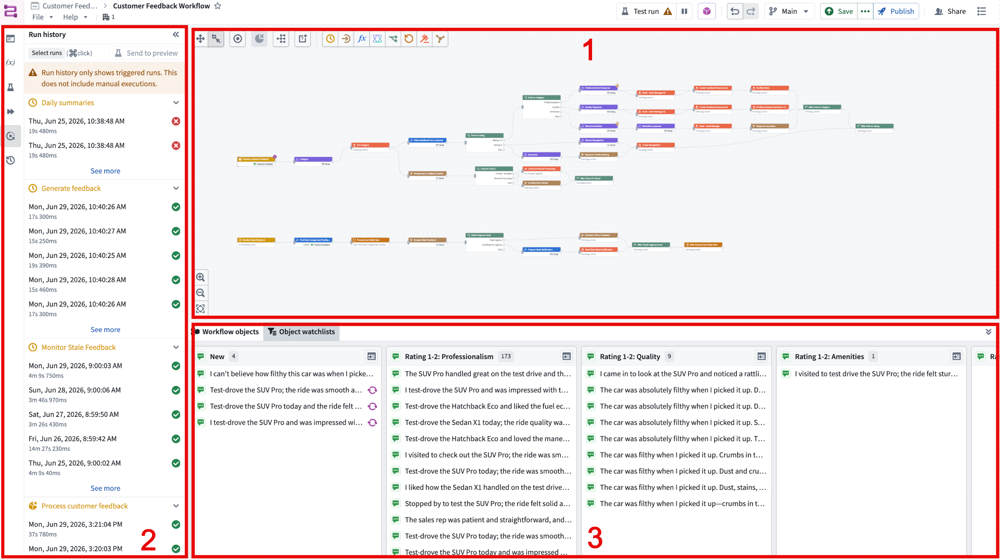
Graph: The graph is the central canvas where you build your workflow. Each logical component is a node, and the connections between nodes define the order in which they run and how objects flow from one to the next. You can have multiple workflows within one Workflow Builder graph.
Side panel: The side panel provides the following features:
* Workflow overview: A high-level summary of the workflow, including its nodes and general logical paths.
* Reusable parameters: Saved parameter values you can reference across the workflow so you do not have to re-enter them each time.
* Preview: Run the workflow against sample inputs to verify behavior before deploying. See Previews.
* Workflow execution: Trigger and monitor the live execution of workflows.
* Run history: A record of past executions, including their inputs, outputs, and status. You can also send any previous run into a preview using the Send to preview button.
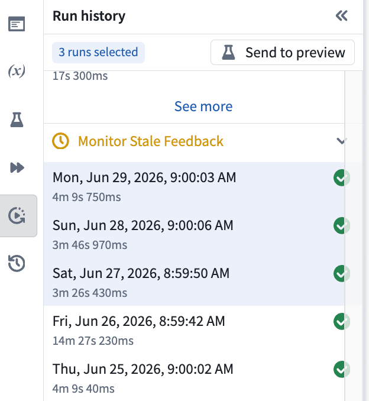
Bottom panel: The bottom panel includes the following features:
* Workflow objects: View a table of the objects in your workflows. You can filter the objects and choose which property types to display.
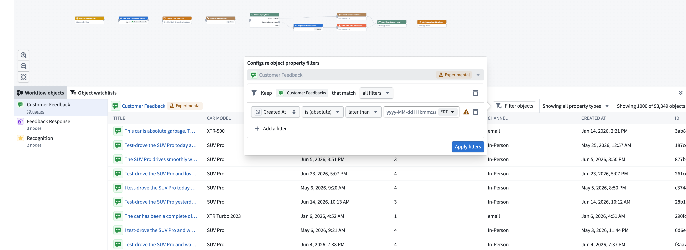
Build workflows in Workflow Builder by placing nodes on the graph and connecting them in sequence. The node types are trigger, compute, use LLM, fork, effect, loop, and subgraph. Add nodes to the graph by selecting the icons at the top of the bottom panel. You can also select a node currently on the graph and choose from the list in the menu.
A trigger node is what starts the workflow. You can customize a trigger to activate either on a specific time schedule or when an Ontology object changes.
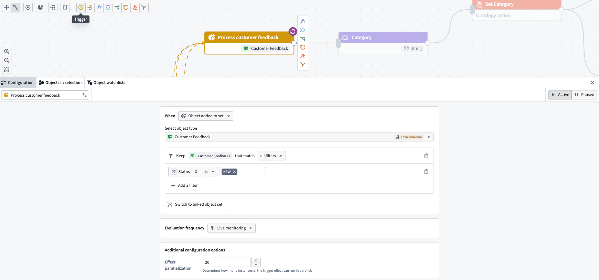
Use a compute node to either run an existing function or build a new transform without needing to input code.
To run an existing function, select Run a function from the dropdown menu in the top right corner of the panel.
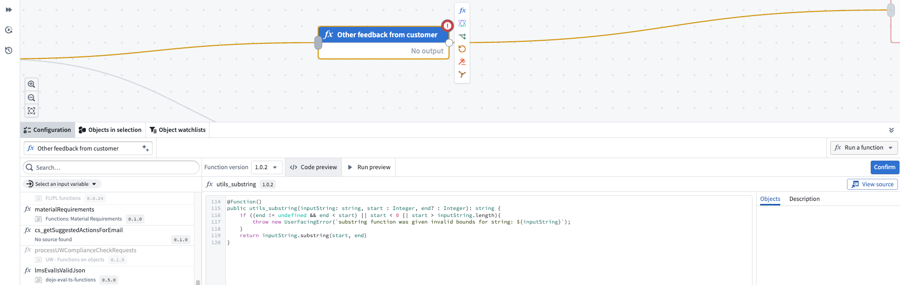
To build a new transform without code input, select Build a transform from the dropdown menu instead.
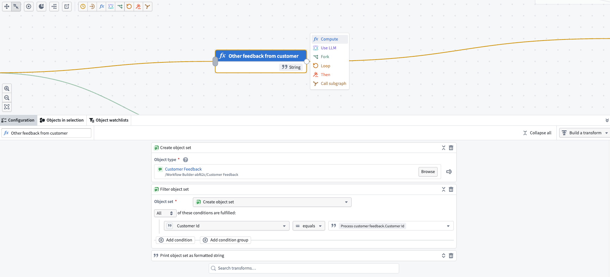
The use LLM node offers a convenient way to execute large language models (LLMs) in your workflows.
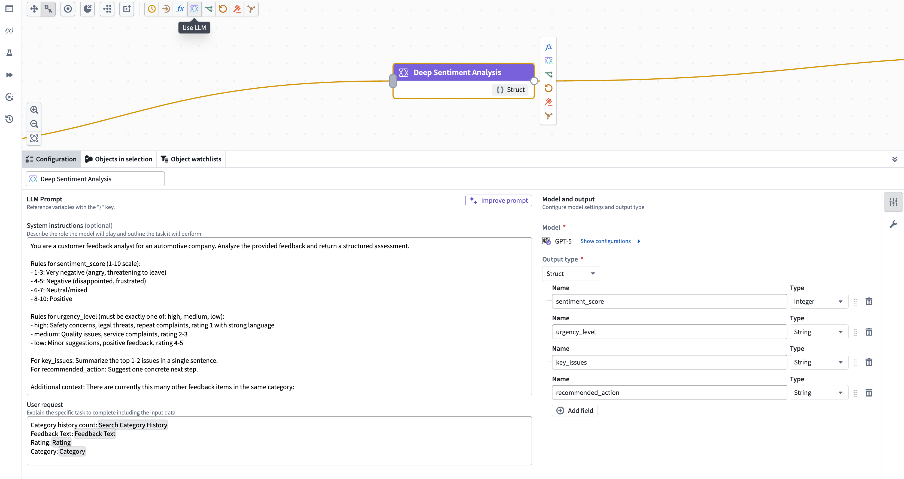
You can also call Ontology tools for the model to use when completing a task. Tools are external functionalities or APIs that can be used by a large language model (LLM) to perform specific actions or retrieve information, such as actions, object queries, or functions.
Select the tool icon on the right to get started.
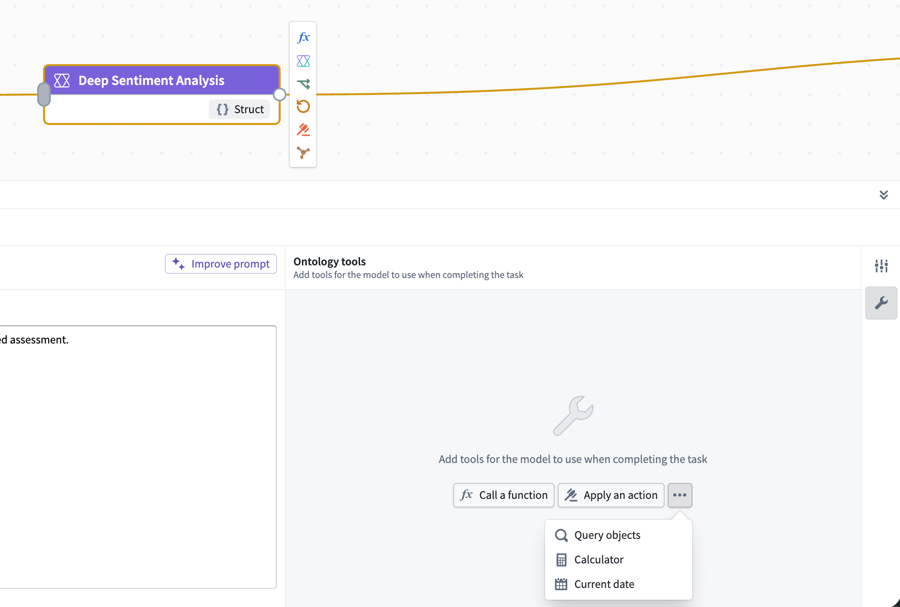
Use the fork node to branch the workflow into multiple paths based on a condition, so different cases follow different logic. Each fork node has an associated after fork node, which lets you specify logic to run after all forked cases are complete. The after fork node is always tied to its fork node and cannot be edited or moved on its own.
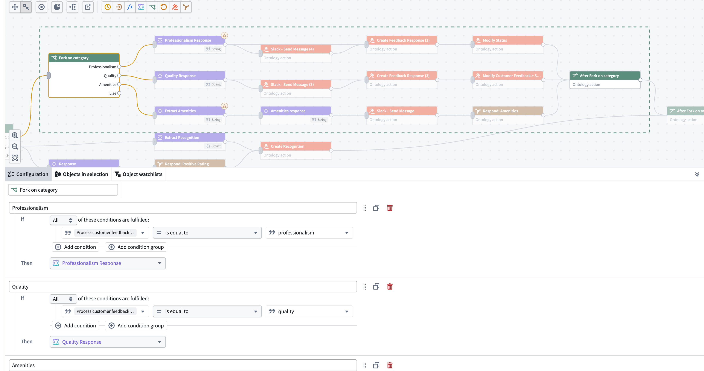
Forks can be nested inside other forks and loops.
Use the effect node to call an action or do nothing. Actions can include editing an Ontology object or sending a notification.
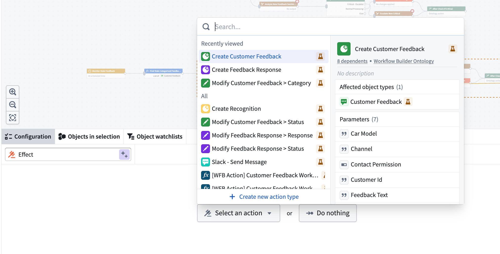
Use the Do nothing option for branches in a fork node that do not require any action. This makes it easy to see which route was taken when previewing your workflow.
A subgraph lets you group a set of nodes into a reusable unit. This makes it possible to build complex workflows by combining regular nodes with subgraph nodes. To create a subgraph, choose the Subgraph option at the top of the page.
Building a subgraph works the same way as building any other workflow that starts with a trigger. However, instead of a standard Trigger node, you start with a Subgraph node.
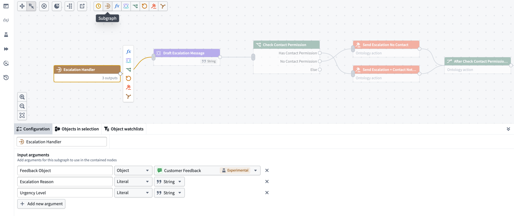
To use an existing subgraph, select the Call subgraph node option when adding a node to your graph.
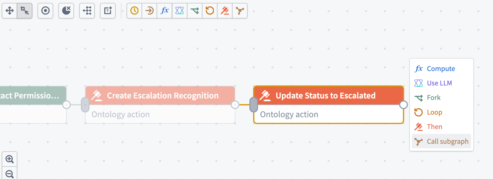
Subgraphs currently cannot be reused across different Workflow Builder graphs. However, you can copy and paste a subgraph directly, or copy and paste a workflow that uses a subgraph. When pasting a workflow, the subgraph is automatically added to your new Workflow Builder graph.
Use a loop node to iterate over a list of elements, such as an object set. For each loop node you must define the following:
Every loop node has an associated after loop node, which lets you specify logic to run after all iterations are complete. The after loop node is always tied to its loop node and cannot be edited or moved on its own.
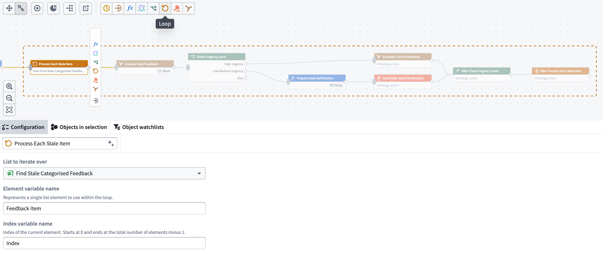
Loops can be nested inside other loops and forks.
After building a workflow, you can test it end to end before publishing. Conduct previews from the side panel, without leaving the graph.
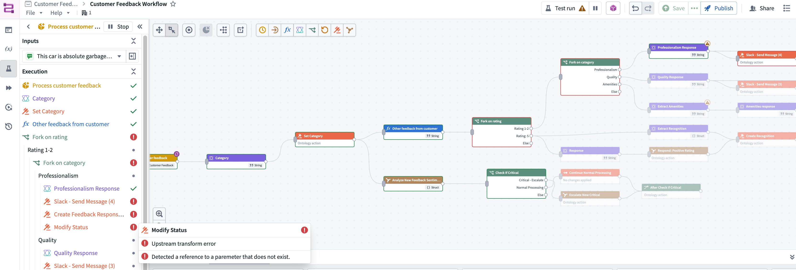
Select + Add on the workflow you want to preview, then choose the inputs to run against. You can select multiple real objects and run them through the workflow at the same time, and you can run as many tests in parallel as you want.
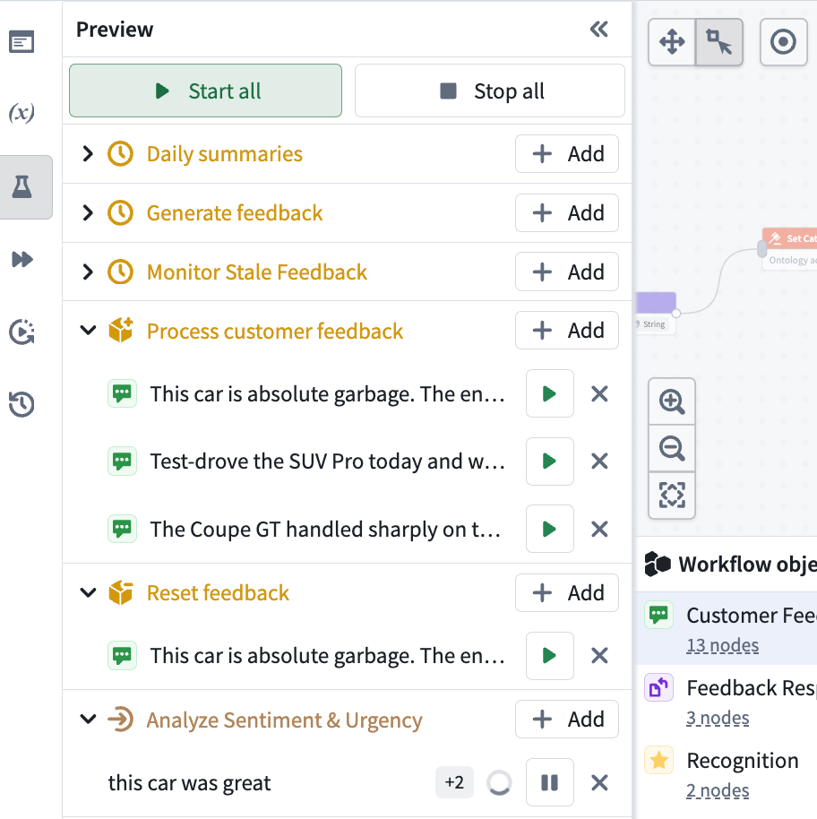
A preview run lets you watch each object move through the graph and view the exact path it takes, including which branch it follows at a fork.
Previews are live; once started, a run automatically re-executes as you edit the graph, so you can view the effect of each change immediately.
To leave preview mode, select the pause icon at the top of the graph or in the side panel, or Stop all at the top of the side panel.
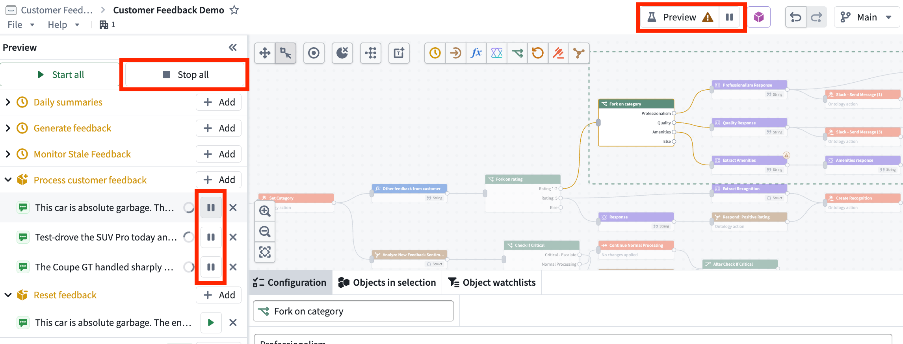
You can inspect what happens at each node. To view a node's value, hover over the node in the side panel.
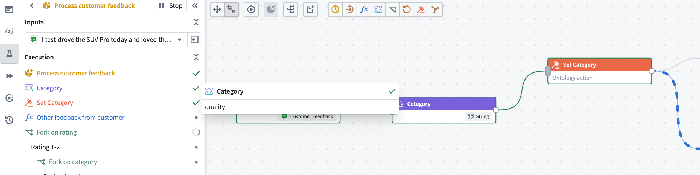
Because previews operate on real objects, you can confirm a workflow behaves as expected against actual data before you publish it.
When a preview completes, the execution path automatically collapses to reveal the Outputs section, which lists every object that was created, edited, or deleted. Expand any row to view the object's exact values.
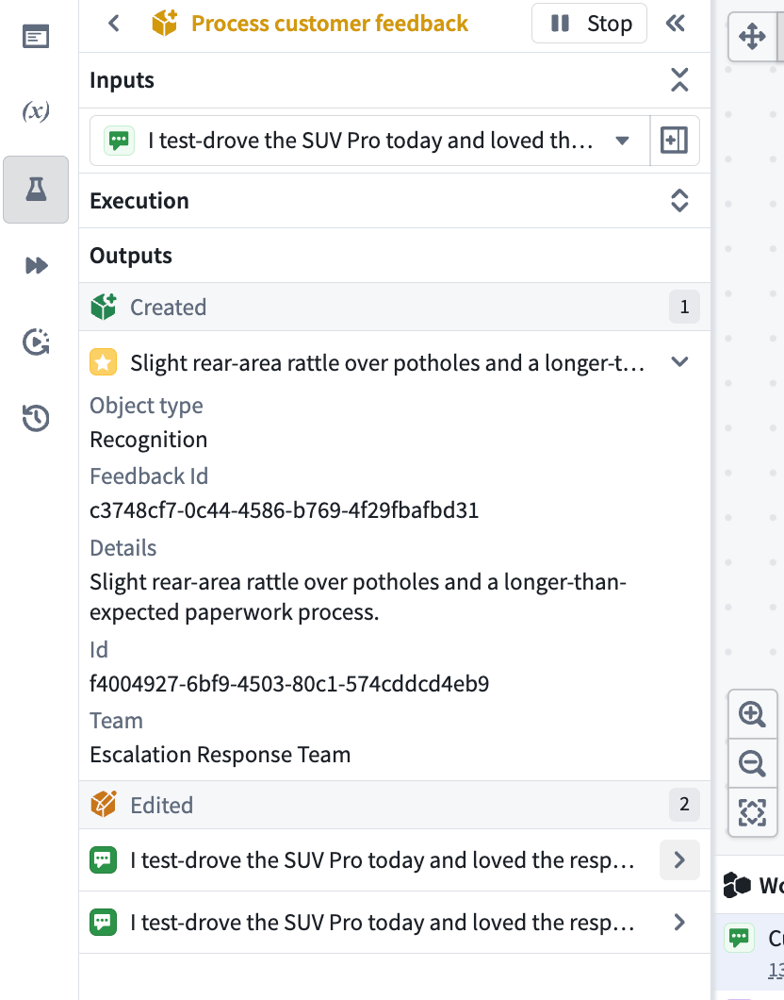